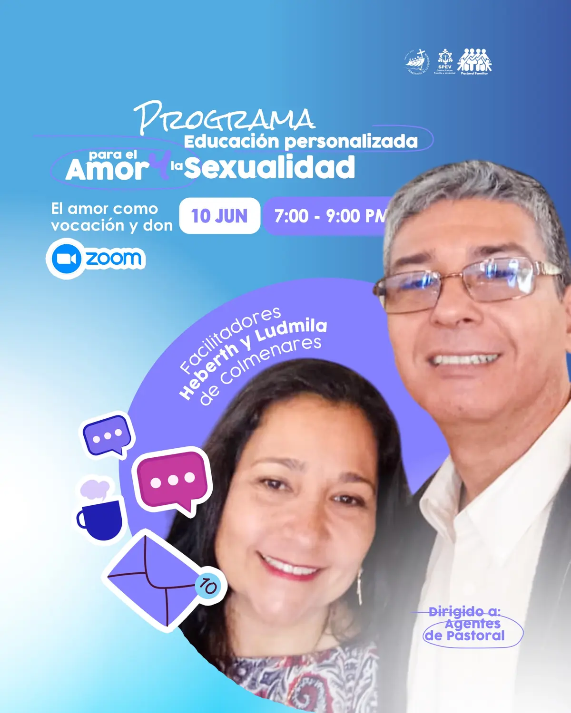
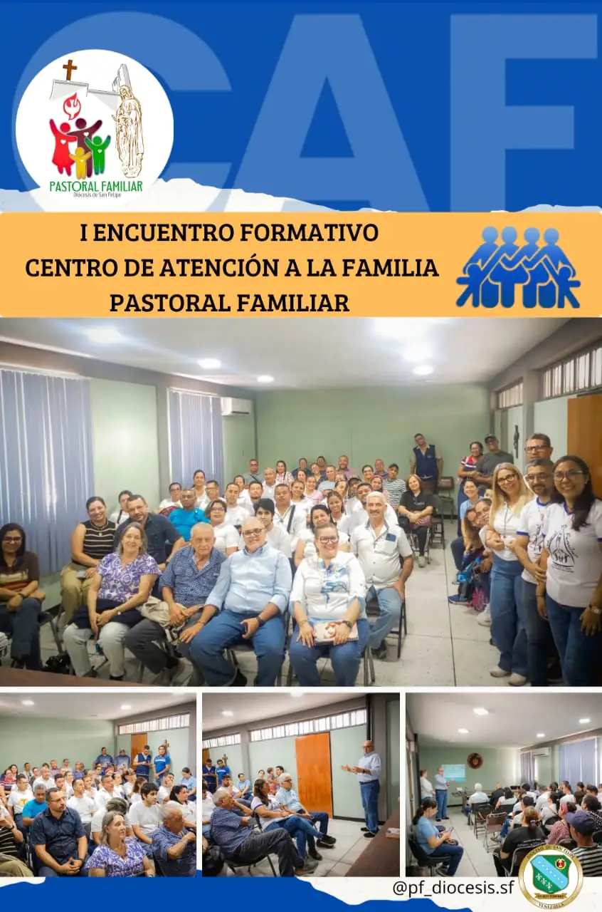

Familia
Programas y materiales de Familia
La Pastoral Familiar trabaja con líneas de formación para equipos diocesanos, agentes, padres y parejas, y con campañas anuales que traen sus propios materiales.

Programas de Familia
Según el Centro, la Pastoral Familiar trabaja con estas líneas de acción. Se inscriben en los desafíos del documento «Iglesia y Familia: Presente y Futuro», del Concilio Plenario de Venezuela.
- Formación de equipos diocesanos: encuentros anuales o semestrales de estudio sobre la vida familiar y espiritual.
- Formación de agentes: diplomados, cursos, talleres y seminarios para quienes sirven en la pastoral familiar. En marzo de 2025, por ejemplo, el Área hizo con el INPAS el módulo III del Diplomado de Pastoral Familiar.
- Escuela de padres: herramientas para que padres y representantes eduquen a sus hijos con valores.
- Fortaleciendo la conyugalidad: formación permanente para el crecimiento de la pareja. En 2026 hubo un retiro y un encuentro de parejas en El Hatillo.
- Educación para el amor y la sexualidad: formación en valores humanos y cristianos.
- Encuentros de preparación inmediata al matrimonio: encuentros formativos en los últimos meses antes de la boda. En agosto de 2022 se hizo la 3.ª Asamblea Nacional de estos encuentros.
Campañas
Las campañas anuales de Familia son Abrazo en Familia y Semana por la Vida:
- Abrazo en Familia: la campaña nacional de octubre y noviembre, con su lema anual y sus materiales.
- Semana por la Vida: la semana de marzo en defensa de la vida desde la familia.
Materiales
- Abrazo en Familia 2026: afiche, guía del facilitador, hoja del niño, plantilla de presentación, imagen oficial y logos.
- Abrazo en Familia 2025: guía del facilitador (32,6 MB), hoja del niño (4,1 MB) y afiche (6,9 MB), en PDF.
- Semana por la Vida 2026: subsidio en PDF, con el Rosario por la Vida, una oración a san José y una propuesta de Hora Santa.
Galería

Programa de formación del Área de Familia. Cartel del programa de educación personalizada en la sexualidad, con una pareja de facilitadores y la indicación de sesiones por Zoom el 10 de junio de 7:00 a 9:00 p. m. Crédito: Centro de Laicos, Familia y Juventud, CEV. 
Encuentro formativo del Área de Familia. Cartel del I Encuentro Formativo del Centro de Atención a la Familia con foto de asistentes en una sala. Crédito: Centro de Laicos, Familia y Juventud, CEV. 
Material de la campaña Abrazo en Familia 2026. Manos sosteniendo la portada de la Guía del Facilitador de la campaña Abrazo en Familia. Crédito: Centro de Laicos, Familia y Juventud, CEV. 
Material de la campaña Abrazo en Familia 2026. Hojas de actividades de la campaña Abrazo en Familia presentadas como Hoja del Niño, sobre fondo suave en tonos azules. Crédito: Centro de Laicos, Familia y Juventud, CEV.